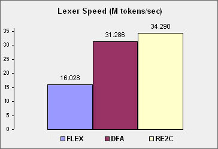
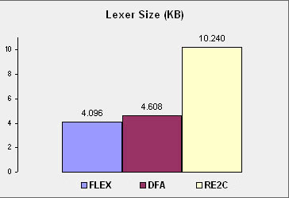

|
LRSTAR - Parser Generator for C++ | A.M.D.G. |
|
About
Feedback
Installation and Setup LRSTAR DFA Papers Release Notes Contact, Support |
  DFA Options Type "dfa" and you get this: DFA 24.0.000 64b Copyright Paul B Mann. | | DFA LEXER GENERATOR | | dfa <grammar> [/<option>...] | | OPTION DEFAULT DESCRIPTION | crr 1 Conflict report for Reduce-Reduce | csr 1 Conflict report for Shift-Reduce | d 0 Debug lexer activated | g 0 Grammar listing | ko 0 Keywords only (no identifiers). | m 0 Minimize lexer-table size | st 0 State machine for conflicts report | sto 0 State machine optimized | v 2 Verbose mode (0,1,2) | w 0 Print warnings on screen |_ DFA Grammars DFA reads a grammar, which is more powerful than regular expressions, and more readable. Have you ever tried to specify a multi-line comment with regular expressions? DFA reads two files. In the Calc project, the first one is Calc.lex. This file contains all the tokens of your language. It's generated by LRSTAR when reading the "Calc.grm" file. The second one DFA reads is Calc.lgr, in which you specify the rules for making the tokens and the character-set definitions. Here is the Calc.lex generated by LRSTAR.
$Goal -> $Token $End
$Token -> <eof> 1
-> <identifier> 2
-> <integer> 3
-> 'else' 20
-> 'endif' 16
-> 'if' 15
-> 'program' 10
-> 'then' 19
-> '!=' 5
-> '(' 17
-> ')' 18
-> '*' 8
-> '+' 6
-> '-' 7
-> '/' 9
-> ';' 14
-> '=' 13
-> '==' 4
-> '{' 11
-> '}' 12
;
Here is the Calc.lgr written by a user.
<eof> -> \z
<identifier> -> letter (letter|digit)*
<integer> -> digit+
{whitespace} -> ( \t | \n | \r | ' ' )+
{commentline} -> '/' '/' neol*
{commentblock} -> '/' '*' na* '*'+ (nans na* '*'+)* '/'
letter = 'a'..'z' | 'A'..'Z' | '_'
digit = '0'..'9'
any = 0..127 - \z // any character except EOF
na = any - '*' // not asterisk
nans = any - '*' - '/' // not asterisk not slash
neol = any - \n // not end of line
\t = 9 // tab
\n = 10 // newline
\r = 13 // return
\z = 26 // end of file
Notice the {whitespace}, {commentline} and {commentblock}. They are ignored symbols, NOT transmitted to the parser. Notice the = indicator is used to define a character set, whereas the -> is for rules only. DFA-Only Grammars If you are using DFA only, without LRSTAR, then you may specify everything in the Calc.lgr file, as follows. The defined constants EOFILE through RBRACE will be available to use in your code, hand-written parser or whatever.
$Goal -> $Token $End
$Token -> <eof> EOFILE
-> <identifier> IDENTIFIER
-> <integer> INTEGER
-> 'else' ELSE
-> 'endif' ENDIF
-> 'if' IF
-> 'program' PROGRAM
-> 'then' THEN
-> '!=' NOTEQ
-> '(' LPAREN
-> ')' RPAREN
-> '*' MUL
-> '+' PLUS
-> '-' MINUS
-> '/' DIV
-> ';' SEMI
-> '=' EQ
-> '==' EQS
-> '{' LBRACE
-> '}' RBRACE
<eof> -> \z
<identifier> -> letter (letter|digit)*
<integer> -> digit+
{whitespace} -> ( \t | \n | \r | ' ' )+
{commentline} -> '/' '/' neol*
{commentblock} -> '/' '*' na* '*'+ (nans na* '*'+)* '/'
letter = 'a'..'z' | 'A'..'Z' | '_'
digit = '0'..'9'
any = 0..127 - \z // any character except EOF
na = any - '*' // not asterisk
nans = any - '*' - '/' // not asterisk not slash
neol = any - \n // not end of line
\t = 9 // tab
\n = 10 // newline
\r = 13 // return
\z = 26 // end of file
|
| (c) Copyright Paul B Mann 2023. All rights reserved. |